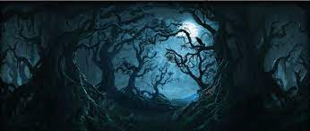
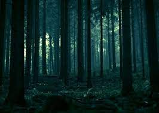

Загальний опис
Заборонений ліс - це ліс, який межує з територією Школи чаклунства Хогвартс. Як випливає з назви лісу, учням було суворо заборонено відвідувати його — за винятком уроків догляду за магічними істотами, які час від часу проходили там. Звичайно, оскільки в лісі живуть різноманітні небезпечні істоти, мало хто з учнів захоче туди зайти.
Особливості лісу
У лісі є дерева, такі як бук, дуб, сосна, явір і тис, а також підлісок, такий як спориш і терен. Хатина лісника Рубеуса Гегріда була розташована на краю Забороненого лісу. По всьому лісу були стежки, струмки та галявини. Поза стежкою шлях був майже непрохідний. Вночі було важко орієнтуватися в лісі, бо коріння дерев і пеньки були ледве помітні в темряві. Також відомо, що одяг зачіплявся за низько опущені гілки та ожину.
Мешканці лісу
Ліс був домом для широкого та дивного асортименту істот. Туди поміщали все дике й небезпечне, що потребувало місця для проживання. У лісі проживали такі магічні істоти, як кентаври, єдинороги, гіпогрифи. Серед звичайних, немагічних звірів присутні олені і лисиці. Також у лісі існувала колонія акромантулів.